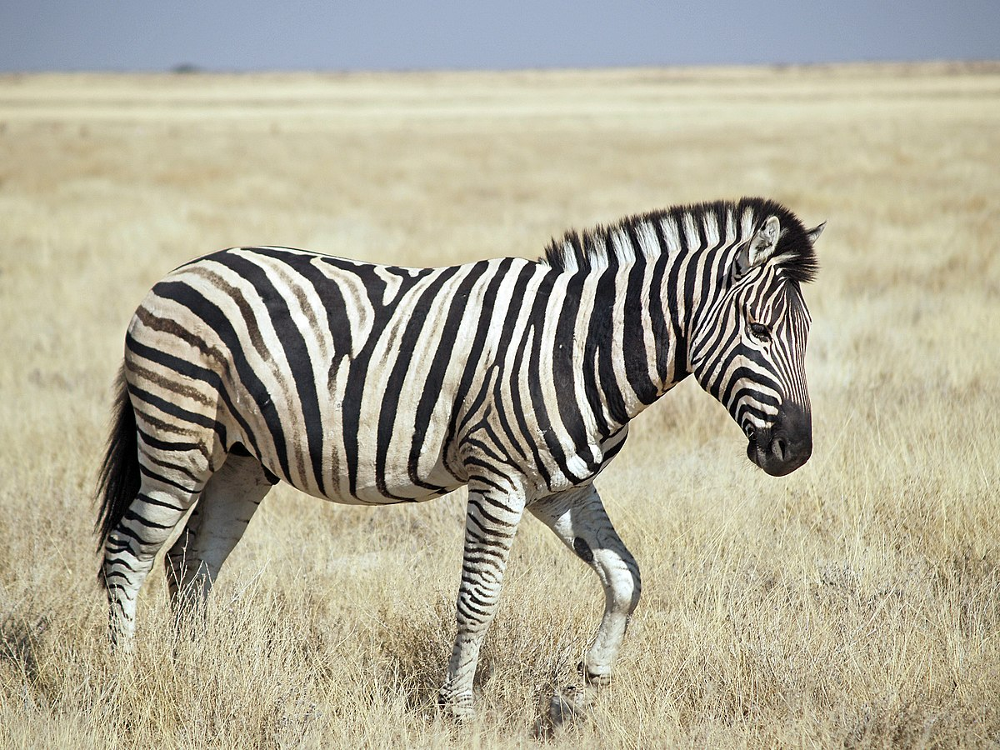
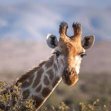
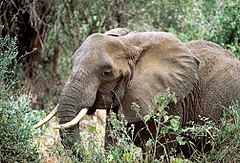
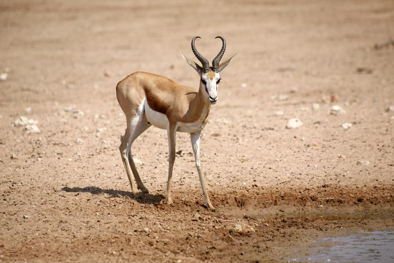

Le safari du Zoo de Montargis compte plus d'une dizaine d'animaux.
En voici cinq d'entre eux.
Zèbres
- Nom scientifique : Equus zebra
- Famille : Equidae
- Habitat : Savanes et prairies d'Afrique
- Régime alimentaire : Herbivore, se nourrit principalement d'herbes, de feuilles, d'écorce et de pousses
- Caractéristiques : Corps rayé noir et blanc, long cou, oreilles mobiles, vision et ouïe très développées, socialisation en troupeaux
Girafes
- Nom scientifique : Giraffa camelopardalis
- Famille : Giraffidae
- Habitat : Savanes et prairies d'Afrique
- Régime alimentaire : Herbivore, se nourrit principalement de feuilles d'acacias et d'autres plantes à feuilles
- Caractéristiques : Long cou, pattes très longues, corps tacheté, langue bleue très longue, le plus grand animal terrestre
Eléphants
- Nom scientifique : Loxodonta (éléphant d'Afrique) / Elephas (éléphant d'Asie)
- Famille : Elephantidae
- Habitat : Forêts tropicales, savanes, zones humides
- Régime alimentaire : Herbivore, se nourrit principalement de végétation, herbes, feuilles, écorce, fruits
- Caractéristiques : Grande taille, trompe préhensile, grandes oreilles (pour l'éléphant d'Afrique), petites oreilles (pour l'éléphant d'Asie)
Lions

- Nom scientifique : Panthera leo
- Famille : Felidae
- Habitat : Savanes, plaines herbeuses, zones semi-désertiques
- Régime alimentaire : Carnivore, se nourrit principalement de proies telles que les antilopes, les buffles, les zèbres
- Caractéristiques : Grande taille, pelage jaune à brun, crinière distinctive chez les mâles, socialisation en groupe appelé "fierté"
Antilopes
- Nom scientifique : Famille des Bovidae
- Famille : Bovidae
- Habitat : Principalement dans les savanes, les prairies et les forêts ouvertes
- Régime alimentaire : Herbivore, se nourrit principalement de végétation comme l'herbe, les feuilles et les arbustes
- Caractéristiques : Corps élancé, pattes fines et agiles, cornes courbées chez de nombreuses espèces, adaptabilité à des environnements variés